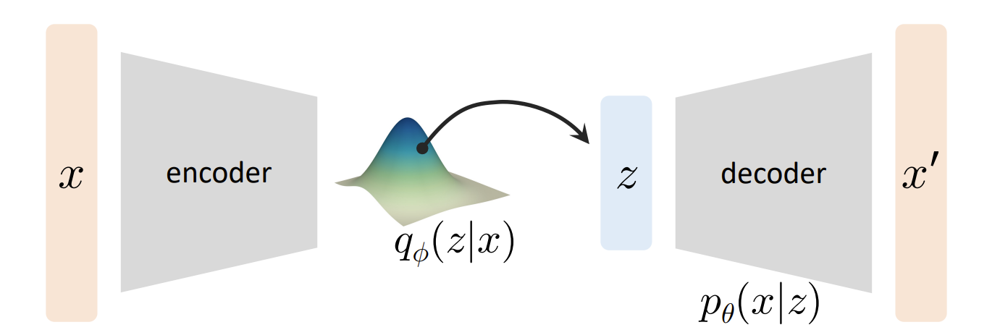
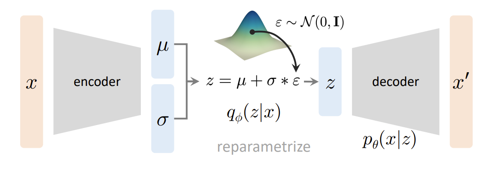

参考资料：MIT 6.S978 ，苏神blog ，参考代码 ，主要是根据 MIT 的课件顺了一遍原理
VAE
模型建立
我们希望通过神经网络获得一个生成模型 pθ(x) ，它能很好地拟合真实数据分布 pdata(x) 。
然而直接去训练 pθ(x) 是不可行的：
- 训练难，pθ(x) 是一个极高维的分布，参数量极大其难以定义，无法直接训练
- 采样难，pθ(x) 并非有解析结构的分布，无法简单采样
因此我们希望从一个简单分布 pθ(z) 去采样 x （实际使用时我们选择 pθ(z) 为正态分布，此时 pθ(z)=p(z) ，即不含可训练参数）
基于这个先验分布 pθ(z) ，再训练出 pθ(x∣z) ，就能通过全概率公式 pθ(x)=∫pθ(z)pθ(x∣z)dz=Ez∼pθ(z)pθ(x∣z) ，求出 x 的分布。
现在我们需要确定目标：
θminDKL(pdata∣∣pθ)→θminEx∼pdatalogpθ(x)pdata(x)→θmaxEx∼pdatalogpθ(x)+C
因此最小 KL 散度转化为了最大对数似然。
但是 logpθ(x)=logEz∼pθ(z)pθ(x∣z) 也是没办法直接训的，因为给定 x 的时候，对于绝大部分的 z ，有 pθ(x∣z)≈0 ，这样用蒙特卡洛方法求出的结果方差极大，很不稳定。
这里又引入了一个 q(z∣x) （实际上是后验 pθ(z∣x) 的近似，实践时一般取高斯分布）
logpθ(x)=∫q(z∣x)logpθ(x)dz=∫q(z∣x)logpθ(z∣x)pθ(z)pθ(x∣z)dz=∫q(z∣x)logpθ(z∣x)pθ(z)pθ(x∣z)q(z∣x)q(z∣x)dz=∫q(z∣x)log(pθ(x∣z)⋅q(z∣x)pθ(z)pθ(z∣x)q(z∣x))dz=Ez∼q(z∣x)logpθ(x∣z)−DKL(q(z∣x)∣∣pθ(z))+DKL(q(z∣x)∣∣pθ(z∣x))
因此有：
logpθ(x)−DKL(q(z∣x)∣∣pθ(z∣x))=Ez∼q(z∣x)logpθ(x∣z)−DKL(q(z∣x)∣∣pθ(z))(1)
此时， 有：
-
logpθ(x) 是 intractable 的
-
DKL(q(z∣x)∣∣pθ(z∣x)) 是 intractable 的，它需要获得 pθ(z∣x)=pθ(x)pθ(x∣z)pθ(z) ，但是 pθ(x) 是 intratable 的。
-
Ez∼q(z∣x)logpθ(x∣z) 是 tractable 的，蒙特卡洛方法求解即可
-
DKL(q(z∣x)∣∣pθ(z)) 是 tractable 的，因为 q,p 分别为高斯分布和正态分布，KL 散度有解析式
且这个等式对于任意的 q(z∣x) 都成立，因为它无法直接求解，因此转而训练 qϕ(z∣x) 。
此时模型结构已经清晰：

encoder 即为 qϕ(z∣x) ，decoder 即为 pθ(x∣z) 。
注意这里模型拟合的不是真实图像，而是分布的参数，比如 decoder 输出的是 x′ ，表示的是 pθ(x∣z) 这个分布的均值在 x′。
模型分析
对于 (1) 的前半部分，它由两部分组成：
- logpθ(x) 表示拟合分布和真实分布的接近程度
- DKL(qϕ(z∣x)∣∣pθ(z∣x)) 表示 qϕ(z∣x) 和 pθ(z∣x) 的接近程度
后半部分是 tractable 的：
ELBO=Ez∼qϕ(z∣x)logpθ(x∣z)−DKL(qϕ(z∣x)∣∣pθ(z))
令损失函数 Lθ,ϕ(x)=Ex∼pdata[−Ez∼q(z∣x)logpθ(x∣z)+DKL(q(z∣x)∣∣pθ(z))]
前半部分为 reconstruction loss ，后半部分为 regularization loss
重参数化
实际操作时用 reparameterize 的技巧，令 z=μ+σ⋅ϵ ，取 ϵ∼N(0,I) ，训练 μ,σ 即可。

L2 Loss
实际实现时，我们会假设 pθ(x∣z) 是高斯的（当然也可以是别的），那么：
encoder 会预测出分布 qϕ(z∣x) 的均值和方差，以求出隐变量 z ，decoder 会预测出分布 pθ(x∣z) 的均值 x′ ，此时 pθ(x∣z) 可以表示为 N(x∣x′,σ02) ，那么目标函数 logpθ(x∣z)=2σ021∣∣x−x′∣∣22+C ，因此最小化 ∣∣x−x′∣∣22 即可。
补充
根据苏神的 blog，这里的 μ,σ 的计算是关于每个样本 Xk 专属的 p(Z∣Xk) ，这样才能保证 Xk 和 Zk 的一一对应。
还有更深入的内容有待思考……
其他一些思考
-
Q: 为什么假设 qϕ 和 pθ 是高斯的，这和实际分布相差也太大了。
A: 首先是为了便于计算，其次高斯分布的叠加有拟合复杂分布的能力。
-
Q: 既然 qϕ(z∣x) 是真后验 pθ(z∣x) 的近似，那么 pθ(x∣z) 是否是真似然 p∗(x∣z) 的近似呢？
A: 不是，因为 qϕ(z∣x) 是因为真后验 pθ(z∣x) intractable，于是用模型去近似，它有明确的需要逼近的目标 pθ(z∣x) ，因此损失中也存在 DKL(qϕ(z∣x)∣∣pθ(z∣x)) 。而 pθ(x∣z) 是我们训练出来去拟合 pθ(x) 的，它不是要逼近 p∗(x∣z) ，它做的近似是用高斯分布去近似拟合 pθ(x) 。